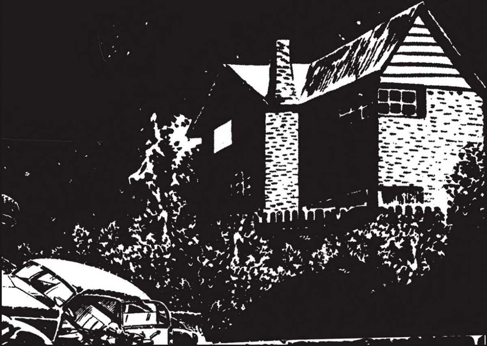

(la publicación fue un éxito y el personaje tuvo su propia revista, Batallas Inolvidables). Ticonderoga (con dibujos de Hugo Pratt), Sherlock Time (en colaboración con Alberto Breccia), Latinoamérica y el imperialismo (dibujada por Leopoldo Durañona), La guerra de los antartes (con dibujos de León Napoo y Gustavo Trigo), y Nekrodamus (Horacio Lalia). A principios de la década de 1970, Héctor Oesterheld se vuelca junto con sus cuatro hijas a la militancia política, y colabora en muchas de las revistas de la editorial Atlántida. En Karina creó a “Charlena”, con ilustraciones de Eugenio Zoppi; a “Richard Long”, con dibujos de Alberto Breccia; y a “Yemsbón”, ilustrada por Pérez D'Elías. En Billiken publicó adaptaciones de “20 000 leguas de viaje submarino”, con ilustraciones de Roberto Regalado, y de “Sherlock Holmes”, dibujada por Gustavo Trigo, además de crear a “Marvo Luna”, con dibujos de Solano López, José Muñoz y el binomio Marcos Adán-Roque Vitacca. En 1976 publica El Eternauta II, nuevamente con dibujos de Solano López, pero esta vez ya se reflejaba en el guion su compromiso político, llegando a dictarlo en clandestinidad a través de teléfonos públicos. La dictadura cívico-militar lo secuestró en abril de 1977, fue llevado a diferentes centros clandestinos de detención y fue torturado. En enero de 1978 lo asesinaron. Hasta el día de hoy sus restos continúan desaparecidos. 369
